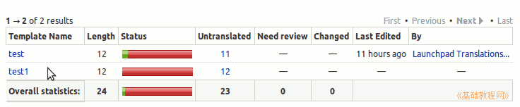
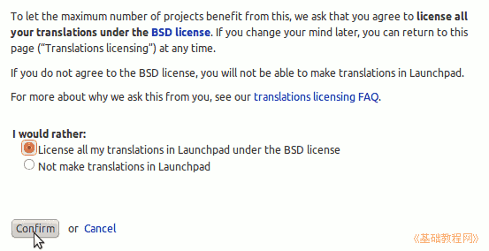
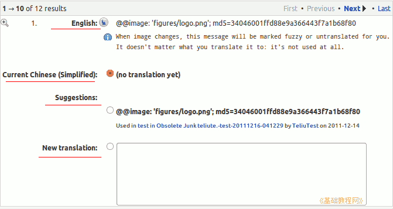
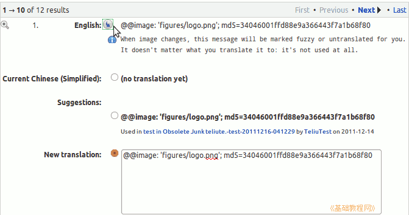
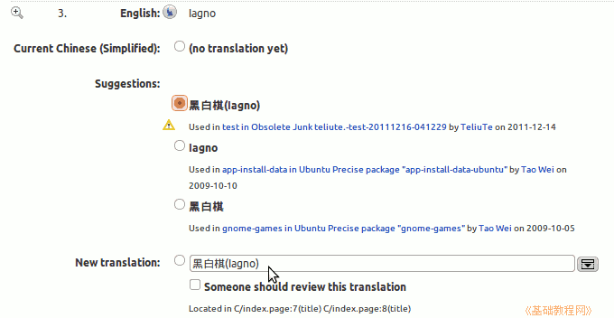
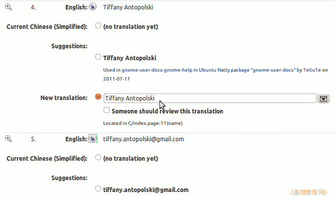
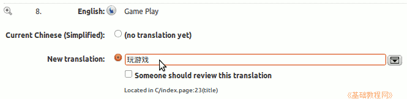
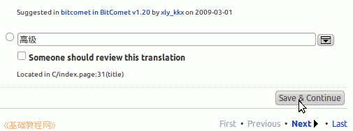
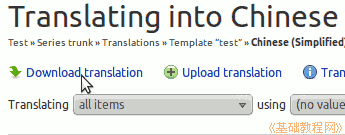

Launchpad 翻译指南
作者：TeliuTe 来源：基础教程网
六、翻译文件 返回目录 下一课使用 Launchpad 平台可以很方便地翻译文件；
1、登录 Launchpad
1）打开自己的项目，点击“Translations”标签，再点击“Chinese (Simplified)”，打开翻译文件列表，；
练习项目：https://launchpad.net/testtutorial
2）在列表中选择一个文件，点击进入翻译页面，首次会询问翻译结果的版权许可，确认使用 BSD 协议；

3）然后进入翻译页面，依次是英文原文、说明、当前翻译、建议，和新译文；

4）这种@@开头的是图片标识，直接复制过来即可，点击原文开头的小按钮，拷贝到译文中；

5）接下来的软件名称，可以翻译成通俗的名称，或者在括号里标注上英文；

6）人名和联系邮箱用原文；

7）内容部分，按照自己的理解进行翻译；

8）一页翻译完成以后，点右下角的“Save & Continue”按钮到下一页，注意一定要点这个按钮保存，而“Next”只是翻页；

9）另外还可以上传和下载翻译文件到自己的本机电脑上，点上边的“Download translation Upload translation”链接，就可以下载po文件；

10）可以参考别人的翻译，到项目主页、论坛、邮件列表中寻求帮助；
本节学习了翻译软件包的基础知识，如果你成功地完成了练习，请继续学习；
本教程由86团学校TeliuTe制作|著作权所有
基础教程网：http://teliute.org/
美丽的校园……
转载和引用本站内容，请保留版权信息和本站链接。